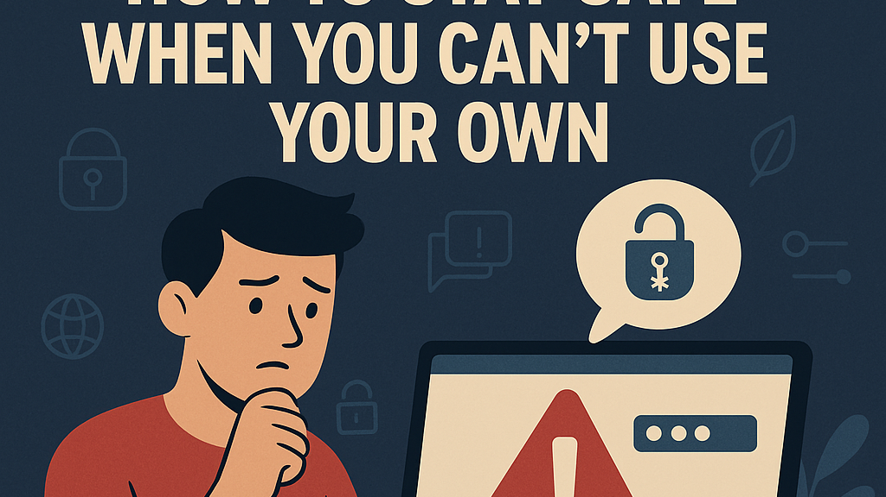

Introduction
Public computers in libraries, internet cafes, and university labs provide essential access to the digital world for many students. However, because these machines are shared by hundreds of strangers, they present massive security risks. You never know who used the computer before you or what malicious software they might have intentionally left behind. Without proper precautions, using a public terminal can easily lead to stolen passwords and compromised accounts. Understanding how to interact with these shared devices safely is a critical component of your digital privacy toolkit.
The Threat of Hidden Keyloggers
One of the most significant threats when using public computers is the potential presence of keyloggers. A keylogger is a type of malicious software or hardware device designed to record every single keystroke you make. Cybercriminals secretly install these tools on public machines to capture sensitive data from unsuspecting users. When you type your username and password, the keylogger records the exact sequence and sends it directly to the attacker. This means that even if the website is secure, your credentials are stolen before they are even encrypted. Hardware keyloggers can sometimes be spotted plugged into the back of the computer tower between the keyboard cable and the USB port. However, software keyloggers are completely invisible and run silently in the background of the operating system. Because you cannot verify the security software installed on a public computer, you must assume that it might be compromised. Avoiding typing highly sensitive passwords on these machines is the best defense against this invisible threat.
The Danger of Forgetting to Logout
Leaving your accounts actively logged in is a common and incredibly dangerous mistake made on public computers. When you finish checking your email or social media and simply close the browser window, your session might remain active. The next person who sits at that computer and opens the browser could have full access to your personal inbox. From there, they can read your private messages, send emails impersonating you, or reset passwords for your other accounts. You must develop a strict habit of manually clicking the "Log Out" or "Sign Out" button on every single website you visit. Never rely on simply clicking the red "X" to close the application, as background processes often keep sessions alive. Additionally, when you log in, make absolutely sure that the "Remember Me" or "Keep me signed in" box is unchecked. Taking three extra seconds to properly terminate your sessions ensures that your digital identity does not fall into the hands of a stranger.
Utilizing Safe Browsing Modes
To minimize the data you leave behind on a shared machine, you should always utilize the browser's private or incognito mode. When you open an incognito window, the browser is instructed not to save your browsing history, cookies, or temporary internet files locally. This prevents the next user from easily checking which websites you visited or recovering fragments of the data you viewed. It is particularly important when researching sensitive personal topics or accessing student portals that handle your private information. However, you must understand that incognito mode does not make you completely invisible to the network administrator or internet provider. It only protects your privacy from the physical users who sit at the computer after you leave. Furthermore, any files you manually download to the computer's hard drive will still remain there after you close the incognito window. Utilizing this mode is a fundamental hygiene practice that creates a temporary, clean slate for your public browsing session.
| Activity | Is it Safe? |
|---|---|
| General Web Browsing | Safe (Use Incognito Mode) |
| Checking School Email | Use Caution (Always Log Out) |
| Online Banking / Shopping | Highly Unsafe (Avoid Entirely) |
Avoiding Financial Transactions
Because of the inherent vulnerabilities of shared networks, you should strictly avoid conducting financial transactions on public computers. Logging into your bank account, entering credit card numbers, or accessing payment portals carries an unacceptably high level of risk. If the computer is infected with malware or spyware, your financial details can be intercepted the moment you type them. Furthermore, public computers are often connected to unsecured public Wi-Fi networks, which are highly susceptible to data interception by hackers nearby. Even if the banking website uses strong encryption, the compromised local machine acts as a fatal weak point in your security. If you urgently need to transfer money or pay a bill, use your personal smartphone over a secure cellular data connection instead. Wait until you are on a trusted, private device before handling anything related to your finances. Protecting your money requires setting firm boundaries on where and how you access your financial accounts.
Clearing Your Digital Tracks
Before you stand up and leave a public computer, you must perform a final sweep to clear your digital tracks. Even if you used incognito mode, it is a wise precaution to manually clear the browser's cache, cookies, and history from the settings menu. If you downloaded any PDF assignments, documents, or personal images to the local hard drive, you must delete them immediately. Simply moving files to the "Recycle Bin" or "Trash" is not enough; you must empty the bin to ensure the files are permanently erased. If you used a USB flash drive to transfer files, remember to safely eject it to prevent data corruption before physically removing it. Take a quick look around your physical workspace to ensure you have not left behind any written notes, ID cards, or flash drives. Leaving a public computer exactly as clean as you found it is the ultimate step in protecting your personal information.
Conclusion
Using public computers safely is all about maintaining a mindset of healthy suspicion and rigorous digital hygiene. You must always assume that the machine you are using could be compromised by hidden malware or keyloggers. By sticking to incognito mode and avoiding highly sensitive financial tasks, you drastically lower your risk profile. The simple habits of manually logging out and clearing downloaded files are your strongest shield against opportunistic identity thieves. Never trust a shared machine to remember your credentials or protect your privacy by default. Implement these protective strategies every time you use a public terminal to ensure your data remains completely yours.